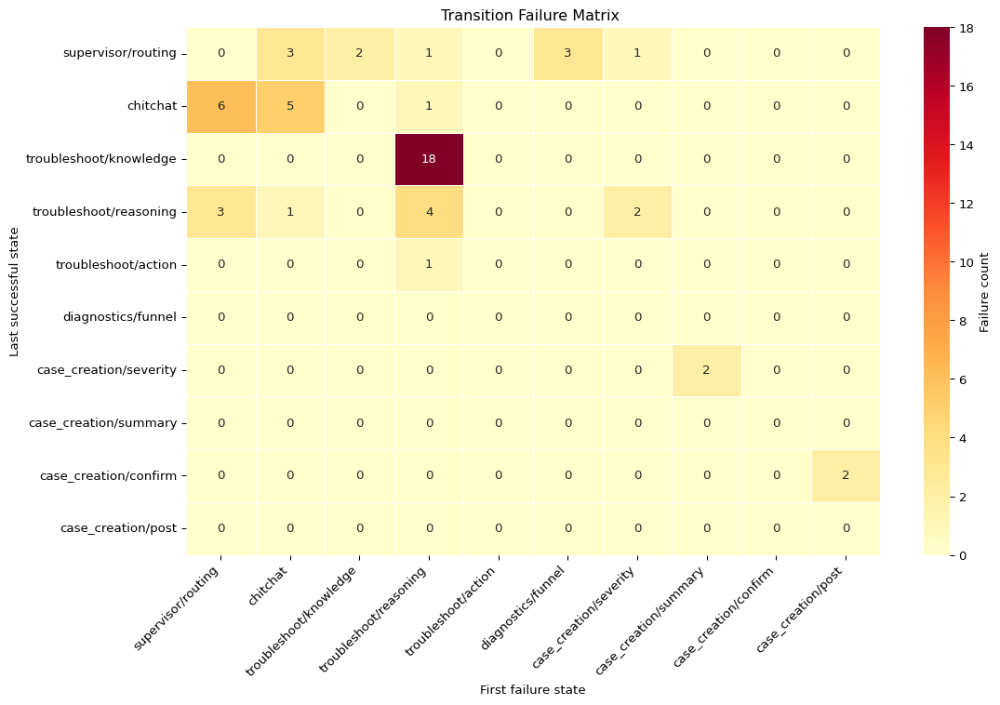
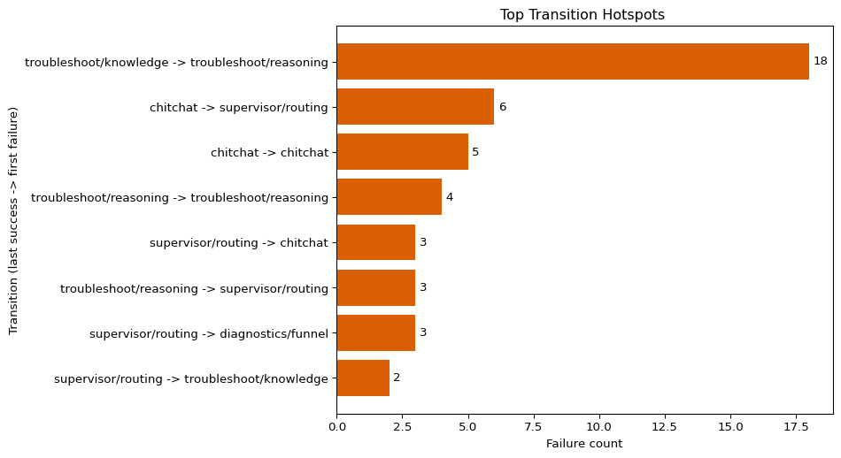

flowchart LR
userMessage[User Message] --> routeIntent[Route Intent]
routeIntent --> chitchatIntake[ChitChat Intake]
chitchatIntake --> troubleshootNode[Troubleshoot]
troubleshootNode --> troubleshootNode
troubleshootNode --> createCase[Create Case]
createCase --> caseCreated[Case Created]
I used to work in simpler workflows.
One question came in, one tool ran, one answer came out. When something failed, I know the error analysis process we could run open coding, name the failure mode, count patterns, and decide what to fix next. It wasn’t easy, but it was manageable.
Then we hit the prioritization wall.
In product reviews, we realized something important: without clear prioritization, we could not run continuous research on what to fix next.
That forced a harder question than “what broke?” We needed to show impact, estimate fix cost, and prove the work was worth doing. It was not enough to list failure modes; we also needed to tell teams exactly what to fix first, second, and third.
Then our system grew into a multi-step agentic workflow.
Now we had routing, retrieval, reasoning, and case creation all handing work off to each other. Failures multiplied across nodes and transitions. Our error analysis still told us what broke (factual error, routing loop, missing context), but it stopped telling us where it broke in the graph. Reviewing whole traces end-to-end was cognitively demanding for humans, and doing that consistently at scale was even harder. And without location, cost and priority stayed fuzzy.
What if we could turn traces into a single grid that shows exactly which transitions are most brittle, so we can walk into prioritization meetings with numbers product can’t ignore?
Error analysis still does crucial work for us. It gives us a shared language for failure modes, counts that patterns are real, and enough signal to start asking better questions.
But by itself, it leaves out the structural location of the break. We still don’t know if the issue happened inside retrieval, inside reasoning, or at the handoff between nodes. That missing location is exactly why prioritization conversations get stuck.
Here is the gap we kept running into in planning conversations:
| You have (from error analysis) | You’re missing (without TFM) |
|---|---|
| Named failure modes from open coding | Which graph node or transition each failure lives in |
| Pattern counts | Whether it’s a retrieval problem or a reasoning problem |
| Subjective priority ordering | Measurable transition volume for objective priority |
| “What went wrong” | “Where exactly did the handoff break” |
Once we add a Transition Failure Matrix, that missing right-hand column becomes visible and actionable.
What is a Transition Failure Matrix (TFM)?
A Transition Failure Matrix is a simple way to map failures onto the structure of an agent workflow.
Instead of stopping at “this answer was wrong,” we ask where in the graph the failure actually started. For every failing trace, we record the handoff from the last successful state to the first failed state. When we aggregate those handoffs across traces, we get a matrix that shows which transitions are the most brittle.
This forces two questions on every failure:
- What was the last successful state before things went off the rails?
- What was the first failed state right after that?
Note
Use a TFM when your workflow has multiple nodes, routing paths, or tool handoffs, and qualitative error labels alone are no longer enough to prioritize fixes.
If your system is mostly single-step, open coding is often enough. Once you’re debugging multi-step behavior and arguing for priority with product, the TFM gives you the structural evidence you were missing.
For a deeper walkthrough of evaluating agentic workflows, see Hamel Husain’s guide and his LinkedIn thread on debugging multi-step agents.
Agentic Support Workflow Primer
Before we get into state labels, here is the system we are labeling.
Our conversational support agent does two jobs in one session:
- Troubleshoot the issue.
- Create a support case when the user wants escalation or when escalation is warranted.
Simple view of the workflow:
Why this matters for TFM: each state in the matrix is a real handoff boundary in this workflow, not an abstract taxonomy label.
Step 1: Define the state vocabulary
Before we annotate anything, we need a shared state vocabulary.
This vocabulary comes from our Agentic Support Workflow for a conversational system that handles both troubleshooting and case creation.
If labels are too broad, every failure looks the same. If labels are too granular, the matrix becomes unreadable. We use 10 states that map to real workflow breakpoints in this conversational troubleshoot-and-case-creation graph.
Skill Engineer Lens
If you own a single skill with internal phases like retrieve -> analyze -> generate, you can run TFM inside that skill even if you do not own the full orchestrator.
Example: retrieval succeeds but the generated answer is wrong. Annotate troubleshoot/knowledge -> troubleshoot/reasoning. That tells you retrieval is likely healthy and the fix belongs in reasoning guardrails.
TFM at different zoom levels
The TFM pattern works at any zoom level. You can apply it to a full orchestrator graph, a single multi-step skill, a ReAct loop, or a multi-agent system. The invariant is simple: define one state per real handoff boundary, then annotate each failed run with the last successful state and first failed state.
| Architecture | Example states | What counts as a handoff |
|---|---|---|
| Orchestrator graph (hub-and-spoke, LangGraph) | supervisor/routing, troubleshoot/knowledge, troubleshoot/reasoning, case_creation/summary |
Edges between graph nodes or sub-phases inside high-complexity nodes |
| Single multi-step skill (skill-engineer lens) | symptom_parse, retrieval, context_analysis, diagnosis_reasoning, response_composition |
Sequential phases inside one skill; the skill owner defines these boundaries |
| ReAct loop | plan, tool_selection, tool_execution, observation_parse, synthesis |
Iteration steps in the loop; each plan-act-observe-synthesize handoff is a transition |
| Multi-agent system | coordinator, researcher_agent, writer_agent, reviewer_agent |
Agent-to-agent handoffs where ownership and context shift |
The state vocabulary table below is the working set used for this analysis.
| state_label | graph_anchor | focus | |
|---|---|---|---|
| 0 | supervisor/routing | supervisor | Intent classification, entity extraction, and ... |
| 1 | chitchat | chitchat | Greeting, intake, and baseline context collection |
| 2 | troubleshoot/knowledge | troubleshoot | Retrieval and grounding context assembly |
| 3 | troubleshoot/reasoning | troubleshoot | Diagnostic reasoning and response synthesis |
| 4 | troubleshoot/action | action | Tool execution branches (commands/MCP) |
| 5 | diagnostics/funnel | diagnostics | Staged diagnostics and narrowing sequence |
| 6 | case_creation/severity | case_creation | Severity suggestion and confirmation |
| 7 | case_creation/summary | case_creation | Case summary drafting and slot filling |
| 8 | case_creation/confirm | case_creation | Final user confirmation before submit |
| 9 | case_creation/post | case_creation | Case creation API result and post-submit behavior |
Three practical rules keep this consistent:
- Pick exactly one
last_success_stateand onefirst_failure_stateper failed trace. - Prefer the most specific state label instead of a coarse node name.
- If retrieval worked but the answer was wrong, annotate
troubleshoot/knowledge -> troubleshoot/reasoning.
How to think about states
Use a simple model: each state is a checkpoint where ownership or behavior can change.
- Control states decide direction:
supervisor/routing,chitchat - Work states do technical diagnosis:
troubleshoot/*,diagnostics/funnel - Commit states finalize escalation:
case_creation/*
When you read a transition:
last_success_state: the last checkpoint that still workedfirst_failure_state: the first checkpoint where behavior brokeX -> X: failure inside one checkpointX -> Y: handoff failure between checkpoints
This framing helps leadership and engineering discuss the same failure in two dimensions at once: customer impact and likely fix ownership.
Step 2: Annotate traces (worked examples)
Now we apply the same two-question rubric to real failures:
- What was the last successful state?
- What was the first failed state?
Below are three representative traces from an example analysis set.
This is where TFM becomes useful: two traces can both be “wrong answer” qualitatively, but land in different structural transitions and require different fixes.
| trace | last_success_state | first_failure_state | failure_mode | annotation_reason | |
|---|---|---|---|---|---|
| 0 | 10 | troubleshoot/reasoning | supervisor/routing | Delayed case creation after explicit request | Case intent was explicit, but routing kept the... |
| 1 | 7 | troubleshoot/knowledge | troubleshoot/reasoning | Factual knowledge error in response synthesis | Grounding succeeded; incorrect claim was intro... |
| 2 | 16 | chitchat | supervisor/routing | Product recognition and routing breakdown | Customer Portal context was provided but not r... |

| supervisor/routing | chitchat | troubleshoot/knowledge | troubleshoot/reasoning | troubleshoot/action | diagnostics/funnel | case_creation/severity | case_creation/summary | case_creation/confirm | case_creation/post | Row total | |
|---|---|---|---|---|---|---|---|---|---|---|---|
| supervisor/routing | 0 | 3 | 2 | 1 | 0 | 3 | 1 | 0 | 0 | 0 | 10 |
| chitchat | 6 | 5 | 0 | 1 | 0 | 0 | 0 | 0 | 0 | 0 | 12 |
| troubleshoot/knowledge | 0 | 0 | 0 | 18 | 0 | 0 | 0 | 0 | 0 | 0 | 18 |
| troubleshoot/reasoning | 3 | 1 | 0 | 4 | 0 | 0 | 2 | 0 | 0 | 0 | 10 |
| troubleshoot/action | 0 | 0 | 0 | 1 | 0 | 0 | 0 | 0 | 0 | 0 | 1 |
| diagnostics/funnel | 0 | 0 | 0 | 0 | 0 | 0 | 0 | 0 | 0 | 0 | 0 |
| case_creation/severity | 0 | 0 | 0 | 0 | 0 | 0 | 0 | 2 | 0 | 0 | 2 |
| case_creation/summary | 0 | 0 | 0 | 0 | 0 | 0 | 0 | 0 | 0 | 0 | 0 |
| case_creation/confirm | 0 | 0 | 0 | 0 | 0 | 0 | 0 | 0 | 0 | 2 | 2 |
| case_creation/post | 0 | 0 | 0 | 0 | 0 | 0 | 0 | 0 | 0 | 0 | 0 |
| Column total | 9 | 9 | 2 | 25 | 0 | 3 | 3 | 2 | 0 | 2 | 55 |

Step 4: Read the matrix (hotspot ranking)
The hotspot ranking makes fix order explicit.
Here is what jumps out:
troubleshoot/knowledge -> troubleshoot/reasoning(18) is the dominant transition by far. Retrieval often works, but synthesis still fails. This is a reasoning-quality problem, not primarily a retrieval-coverage problem.- Routing and intake transitions (
chitchat -> supervisor/routing,chitchat -> chitchat) form the next cluster. This points to intent/entity handling drift and conversational loop risk. - Within-state failures (for example
troubleshoot/reasoning -> troubleshoot/reasoning) indicate instability inside a node, not just handoff problems. - Case-creation transitions are lower-volume in this sample, which suggests they are important but not the first place to spend engineering cycles.
A practical prioritization move is to treat tied or related transitions as one workstream (for example, routing calibration), so we fix structural clusters instead of chasing isolated rows.
Aha Moment
Important
This was the turning point for us.
Before the matrix, we treated factual errors as one bucket. The obvious reaction was, “maybe retrieval is weak – let’s pull better docs.”
The matrix said something else.
We saw 18 failures at troubleshoot/knowledge -> troubleshoot/reasoning. That means retrieval got the workflow to a successful knowledge state, and the break showed up at the reasoning handoff. In plain language: we had context, but we still made the wrong call.
That changed the fix conversation completely:
- Not: “expand retrieval index first”
- Instead: “add reasoning guardrails first” (e.g., evidence checks, contradiction checks, confidence thresholds, and safer fallback behaviors)
This is why structural location matters. The same surface symptom (factual error) can point to very different engineering work depending on where the transition fails.
Warning
This is also a common org trap. One team owns retrieval, another owns AI reasoning, and the break sits at the handoff. Without transition-level evidence, each team can say “our part worked,” and no one owns the end-to-end outcome. Local success, global failure.
From hotspots to fix order
The ranking tells us where failure volume lives. The next step is to convert that into a practical execution order.
One useful trick is to group related transitions into a single workstream. For example, routing and intake drift show up across multiple transitions, but they usually share one root cause cluster (intent calibration, entity extraction, and loop controls).
| priority | workstream | transitions | failure_volume | why_now | |
|---|---|---|---|---|---|
| 0 | 1 | Reasoning guardrails | troubleshoot/knowledge -> troubleshoot/reasoning | 18 | Highest-volume transition; retrieval succeeds ... |
| 1 | 2 | Routing calibration cluster | chitchat -> supervisor/routing; chitchat -> ch... | 11 | Second-largest cluster; intent/entity drift an... |
| 2 | 3 | In-node reasoning stability | troubleshoot/reasoning -> troubleshoot/reasoning | 4 | Within-node instability that can amplify downs... |
| 3 | 4 | Supervisor fallback tuning | troubleshoot/reasoning -> supervisor/routing | 3 | Backtracking suggests escalation or recovery p... |
| 4 | 5 | Case-creation hardening | case_creation/severity -> case_creation/summar... | 4 | Lower aggregate volume in this sample; still n... |
We now have a table we can bring to product and engineering planning:
- It ties each priority to observed volume.
- It distinguishes handoff failures from inside-node failures.
- It makes cost discussions cleaner because each row points to a concrete part of the graph.
This is the practical value of TFM: it turns “this feels bad” into “here is the first workstream to fund, and why.”
Playbook
5-Step Playbook
If you want to reuse this on your next agentic project, use this exact loop.
- Define the state vocabulary. Keep it coarse enough to read quickly, but specific enough to separate routing, retrieval, reasoning, and case-creation stages.
- Annotate traces with two labels. For each failed trace, record the last successful state and the first failure state. Don’t skip this discipline.
- Build the transition matrix. Count every
(last_success -> first_failure)pair and render the heatmap with row/column totals. - Read hotspots as structural evidence. Ask: is this an in-node stability issue, or a handoff issue between components?
- Prioritize fixes by failure volume. Group related transitions into one workstream (for example, routing calibration) and fund the highest-volume cluster first.
The key is consistency. Once your team uses the same five steps every cycle, prioritization meetings move from opinion to evidence.
FAQ
Can I automate the annotation step with an LLM-as-judge?
Caution
Yes. This is a natural next step once the manual rubric is stable. You can have an LLM judge assign last_success_state, first_failure_state, and failure-theme tags for each failed trace, then sample and review a subset with human labels before trusting full-scale outputs.
Treat automated labeling as a throughput multiplier, not ground truth. You still need calibration (inter-rater agreement versus human labels), prompt/version control, and periodic spot checks so matrix trends stay reliable as prompts, models, and workflows evolve.
Closing: the mindset
In Stop Operating Blind, we talked about putting on the diagnostician’s lab coat and naming failure modes.
This is the next tool in that kit.
The Transition Failure Matrix does not replace qualitative error analysis. It sharpens it. Error analysis tells us what symptoms the patient has. The matrix tells us which organ is failing and how often.
That shift matters when we walk into prioritization:
- We can show where failure volume concentrates.
- We can estimate fix cost by structural location.
- We can defend why one workstream should go first.
If you are working on multi-step agentic workflows, this is the habit to build: don’t just classify the disease – localize the break.